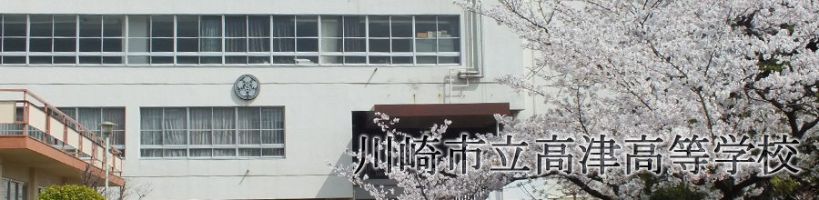
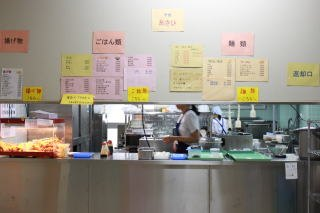
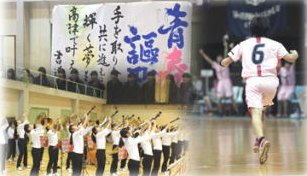
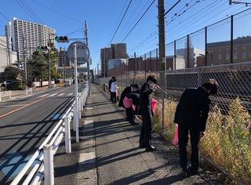

100周年
2028年に創立100年
徒歩7分
溝の口駅から
積木祭
体育の部と文化の部
School Highlights
100周年へ向かう高津高校、ここが自慢。
Real Photos
本物の高津高校を写真で見てみよう。
積木祭のステージ、食堂「あさひ」、部活動、地域のゴミ拾い。高津高校の毎日を公式サイトの写真で紹介します。



写真出典：川崎市立高津高等学校（全日制） 公式サイト（デモ掲載）
Three Powers
高津高校の3つの力
「生徒が主役の学校」で育てる、未来に羽ばたくための3つの力。
01学ぶ力
02自律する力
03実践する力
Learning Style
100年目に向かう、高津高校の学び。
1人1台のタブレットPCで、調べる・まとめる・ふり返る。学んだことは探究発表会や地域の活動で、社会の中で使ってみます。
ICT
1人1台タブレット
探究
市立高校探究発表会
地域
地域のゴミ拾い TCP
School Life
高津高校の学校生活
Events
一年を動かす行事
Route Start
通学路は溝の口駅から。
JR南武線の武蔵溝ノ口駅、東急田園都市線の溝の口駅から高津高校までは徒歩約7分。自転車で通う生徒もたくさんいます。次のゲームでは、溝の口駅をスタート地点にして学校までの道のりをたどります。
-
JR 武蔵溝ノ口駅／東急 溝の口駅スタート
-
徒歩 約7分自転車通学の生徒も多い
-
川崎市立高津高校バスなら「高津高校前」バス停
Mini Game
溝の口ルートダッシュ
溝の口駅から高津高校まで、徒歩7分の通学路を走るミニゲームです。
Score
0
Best
0
メニュー
0
友だち
0
タップ／スペースでジャンプ